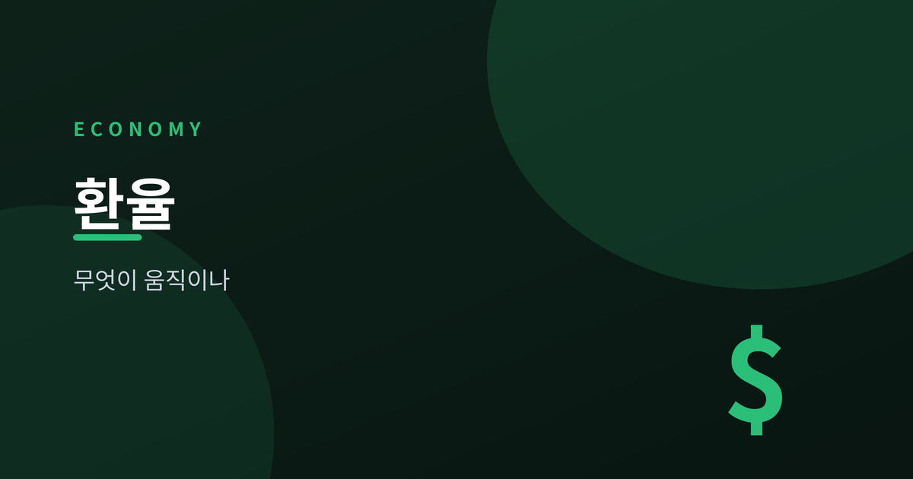
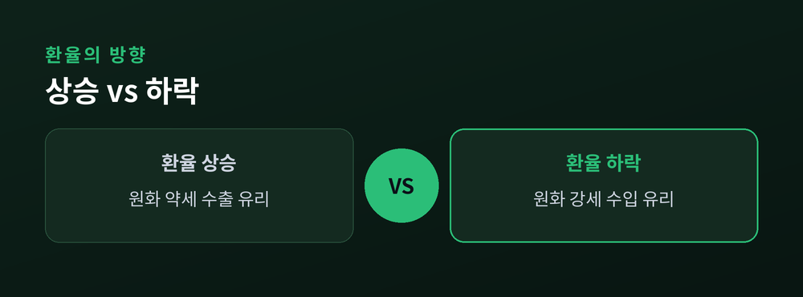
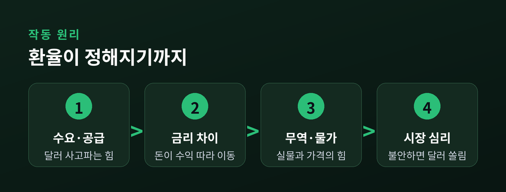
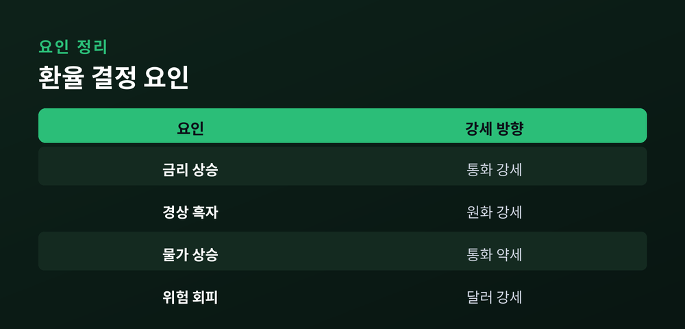
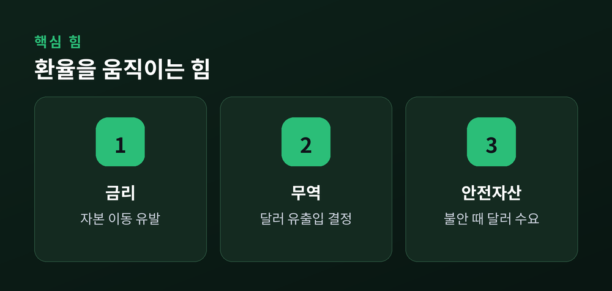

원·달러 환율을 움직이는 힘

뉴스에서 "원·달러 환율이 올랐다" 혹은 "내렸다"는 말을 매일 접하지만, 정작 환율이 어떤 힘으로 움직이는지는 막연하게 느껴집니다. 결론부터 말씀드리면, 환율은 결국 외환시장에서 통화의 수요와 공급이 만나 정해지는 가격입니다. 달러를 사려는 힘이 강하면 달러가 비싸지고, 팔려는 힘이 강하면 달러가 싸집니다.
그 수요와 공급의 뒤에는 몇 가지 굵직한 원리가 자리 잡고 있습니다. 두 나라의 금리 차이, 무역으로 오가는 돈, 물가 수준, 그리고 불안할 때 안전한 곳을 찾는 투자자 심리가 대표적입니다. 이 글에서는 특정 시점의 숫자를 외우는 대신, 시간이 지나도 변하지 않는 '작동 원리'를 정리해 보겠습니다.
이 원리들을 이해하면, 환율 뉴스가 나올 때 "왜 그런 방향으로 움직였을까"를 스스로 해석할 수 있게 됩니다. 미래의 환율을 정확히 맞히는 것은 누구에게도 불가능하지만, 방향을 만드는 힘의 종류를 아는 것은 충분히 가능합니다.
환율은 한 나라 통화와 다른 나라 통화가 교환되는 비율입니다. 우리가 흔히 말하는 원·달러 환율은 "1달러를 사려면 원화가 얼마나 필요한가"를 뜻합니다. 예를 들어 환율이 1,300원이라면 1달러의 값이 1,300원이라는 의미입니다.
한국은 자국통화 표시법을 씁니다. 즉 외국 통화 1단위의 값을 자국 통화로 나타냅니다. 그래서 환율 숫자가 커지면 달러가 비싸진 것이고, 이는 곧 원화 가치가 떨어졌다(원화 약세)는 뜻입니다. 반대로 숫자가 작아지면 원화 가치가 오른 것(원화 강세)입니다. 숫자의 방향과 원화 가치의 방향이 서로 반대라는 점이 처음에는 헷갈리기 쉽습니다.

환율은 결국 외환시장이라는 거대한 장터에서 형성되는 가격입니다. 다른 상품과 마찬가지로, 사려는 양(수요)과 팔려는 양(공급)이 만나는 지점에서 값이 정해집니다.
달러 수요가 늘어나는 경우를 생각해 보겠습니다. 수입 기업이 물건 값을 달러로 치러야 하거나, 국내 투자자가 해외 자산에 투자하려 하거나, 해외여행이 늘어나면 달러를 사려는 힘이 커집니다. 반대로 달러 공급은 수출 기업이 벌어들인 달러를 원화로 바꿀 때, 외국인이 국내 주식·채권을 사려고 달러를 들여올 때 늘어납니다. 수요가 공급보다 크면 환율이 오르고, 공급이 수요보다 크면 환율이 내립니다.
이 단순한 저울 위에, 지금부터 설명할 금리·무역·물가·심리라는 무게추가 얹힌다고 이해하시면 됩니다.
국경을 넘나드는 투자 자금은 조금이라도 더 높은 수익을 찾아 움직입니다. 그래서 두 나라의 금리 차이는 환율에 큰 영향을 줍니다.
일반적으로 한 나라의 금리가 상대적으로 높아지면, 그 나라 통화로 표시된 예금과 채권의 매력이 커집니다. 해외 자금이 들어오려면 그 나라 통화를 사야 하므로 통화 수요가 늘고, 그 통화는 강세가 되는 경향이 있습니다. 예컨대 미국 금리가 한국보다 크게 높아지면, 달러 표시 자산으로 자금이 이동하며 달러 수요가 커지고 원화는 약세 압력을 받는 식입니다. 이처럼 금리 차이를 좇아 움직이는 돈의 흐름을 자본 이동이라고 부릅니다.
다만 금리만으로 모든 것이 정해지지는 않습니다. 금리가 높아도 그 나라 경제나 정치가 불안하면 자금은 오히려 빠져나갈 수 있습니다. 금리는 강력한 힘이지만 유일한 힘은 아닙니다.

투자 자금과 별개로, 물건과 서비스를 사고파는 실물 거래도 환율을 움직입니다. 한 나라가 일정 기간 외국과 주고받은 거래를 종합한 것이 경상수지이고, 그중 상품 거래만 따로 본 것이 무역수지입니다.
수출이 수입보다 많으면(경상수지 흑자) 나라 안으로 들어오는 달러가 나가는 달러보다 많아집니다. 기업들이 이 달러를 원화로 바꾸는 과정에서 달러 공급이 늘어, 원화가 강세를 보이는 경향이 있습니다. 반대로 수입이 더 많으면(적자) 달러가 밖으로 더 많이 나가면서 원화가 약세를 보이기 쉽습니다.
물론 현실에서는 실물 거래와 투자 자금이 동시에 작용하기 때문에, 흑자라고 해서 환율이 반드시 내리는 것은 아닙니다. 여러 힘의 방향이 겹쳐 최종 결과가 나온다는 점을 기억할 필요가 있습니다.
짧은 기간에는 금리와 심리가 환율을 흔들지만, 긴 안목에서는 물가가 통화 가치를 좌우합니다. 이를 설명하는 대표적 개념이 구매력평가(PPP)입니다.
구매력평가는 "같은 물건은 어느 나라에서든 결국 비슷한 값에 팔려야 한다"는 생각에서 출발합니다. 한 나라의 물가가 다른 나라보다 계속 빠르게 오르면, 그 나라 돈으로 살 수 있는 물건의 양이 줄어드는 셈이므로 통화 가치는 장기적으로 떨어지는 경향이 있습니다. 즉 인플레이션이 높은 나라의 통화는 시간이 지날수록 약세로 기우는 힘을 받습니다.
구매력평가는 단기 환율을 정확히 맞히는 도구는 아닙니다. 하지만 몇 년, 몇십 년의 큰 흐름에서 통화 가치가 어느 방향으로 정렬되는지를 이해하는 데 유용한 나침반이 됩니다.

마지막 힘은 숫자가 아니라 심리입니다. 세계 경제나 금융시장이 불안해지면 투자자들은 위험을 피하려는 성향, 즉 위험회피 심리가 강해집니다.
이럴 때 투자자들은 상대적으로 안전하다고 여겨지는 자산으로 몰립니다. 달러는 세계에서 가장 널리 쓰이는 기축통화이자 대표적인 안전자산으로 여겨집니다. 그래서 위기 국면에서는 특별한 이유가 없어도 달러 수요가 급격히 커지며 달러가 강세를 보이는 일이 잦습니다. 원화처럼 상대적으로 변동에 민감한 통화는 이런 국면에서 약세 압력을 받기 쉽습니다.
심리는 예측이 가장 어려운 요인입니다. 같은 뉴스에도 시장이 다르게 반응할 수 있기 때문에, 심리가 움직인 방향은 사후에야 분명해지는 경우가 많습니다.

환율이 오르면(원화 약세) 수출에는 유리한 면이 있습니다. 같은 1달러를 벌어도 원화로 바꾸면 더 많은 금액이 되기 때문입니다. 반대로 수입 물가는 오릅니다. 원유, 원자재, 해외 제품을 달러로 사와야 하므로 국내 물가를 밀어 올리는 요인이 됩니다.
환율이 내리면(원화 강세) 반대 현상이 나타납니다. 수입품과 해외여행 비용이 싸지고 물가 부담은 줄지만, 수출 기업이 원화로 손에 쥐는 금액은 줄어들 수 있습니다. 이처럼 환율은 어느 방향이든 누군가에게는 유리하고 누군가에게는 불리한, 양면을 지닌 가격입니다. 그래서 "환율이 무조건 오르면 좋다 또는 나쁘다"고 단정하기는 어렵습니다.
지금까지 살펴본 수요·공급, 금리, 무역, 물가, 심리는 서로 얽히며 동시에 작동합니다. 그렇기에 미래 환율을 정확히 맞히는 일은 사실상 불가능에 가깝습니다. 다만 어떤 힘이 어떤 방향으로 작용하는지 원리를 알아 두면, 환율 뉴스를 볼 때 막연한 불안 대신 차분한 해석의 눈을 가질 수 있습니다. 오늘 정리한 원리들이 그 출발점이 되기를 바랍니다.